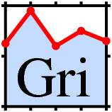

|
Chapters: 1: Introduction 2: Simple example 3: Invocation 4: Finer Control 5: X-Y Plots 6: Contour Plots 7: Image Plots 8: Examples 9: Gri Commands 10: Programming 11: Environment 12: Emacs Mode 13: History 14: Installation 15: Gri Bugs 16: Test Suite 17: Gri in Press 18: Acknowledgments 19: License Indices: Concepts Commands Variables |

Gri is an extensible
plotting language for producing scientific graphs, such as
x-y plots,
contour plots, and
image plots.
This document describes Gri 2.12.10,
Experienced users: To check the syntax of a command, consult the list of Gri commands. See the history to learn how Gri has changed over time. Open-Source Development: Gri is distributed under an OpenSource licence (GPL). To monitor (or contribute to) the development process, visit gri.sourceforge.net.
See also:
The
Gre language combines Gri features with Perl features.
|